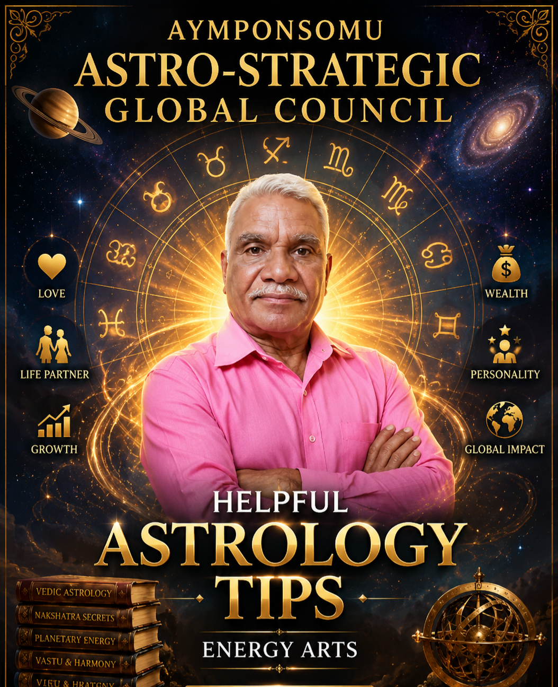

🌌 The Cosmic Vision
AYMPONSOMU COSMIC TAP is a mystical Web3-inspired tap experience built around sacred yantras, cosmic energy, and spiritual symbolism. This evolving platform combines interactive gaming, mystical aesthetics, and digital creativity into a unique cosmic universe.
🔱 Sacred Yantras
The platform features sacred yantra-inspired visuals, mystical symbols, and spiritual geometric concepts transformed into immersive digital experiences. Future expansions include collectible yantras, power activations, and mystical rewards.
⚡ Future Expansion
⚡ Daily Cosmic Rewards
🔱 Power Yantra Activations
🏆 Leaderboards
🪙 AYMP Token
🌌 Community Events
🎮 Web3 Gaming Evolution
🌌 CREATOR

AYMPONSOMU
Mystical digital creator exploring sacred geometry, symbolic yantras, cosmic interaction, and evolving Web3 experiences. Creator of the AYMPON Cosmic ecosystem — blending spiritual artistic inspiration with interactive digital concepts.
This project is an artistic and experimental digital ecosystem inspired by sacred geometry, mystical symbolism, and creative Web3 interaction concepts. No financial, spiritual, or supernatural guarantees are provided.